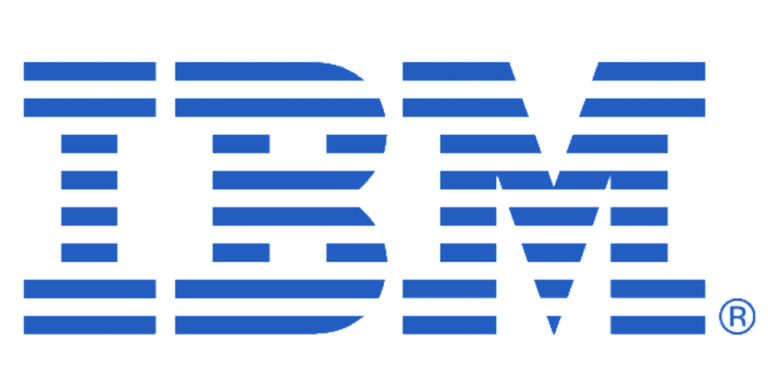

Ciphers
Cipher: "a secret or disguised way of writing; a code". A cipher uses a set of rules, an algorithm, to turn normal text that can be read by humans, into a ciphertext, a seemingly random set of alphanumeric characters. Ciphers are most commonly used in cyber security. Ciphers are used to make different online protocols secure, such as: Secure Sockets Layer (SSL), Transport Layer Security (TLS), and to make HTTP secure, turning it into HTTPS.
I thought this was interesting because I had never really looked into the behind the scenes of cyber security. In a few courses, I had done very basic ciphers, such as ROT13 where you take a character and swap it with the 13th letter after the original character. Ciphers relate to MIS2201 because ciphers are the backbone of cyber security, and encryption as a whole.
The impact of ciphers affects everyone. At least everyone that uses the internet. Ciphers allow everyone that uses the internet to stay safe and secure. They allow our credit card numbers to stay hidden from attackers when making online purchases, and hide emails and passwords from attackers.
Companies that Deal with Ciphers
CIPHER
"CIPHER is a global cyber security company that delivers a wide range of Managed Security Services and Security Consulting Services." CIPHER offers these services that are backed by their security intelligence lab. CIPHER has won several awards such as Best MSSP (Managed Security Service Provider) for the past 6 years! Being a security company, they rely on different forms of encryption to make sure that their clients receive the best in class security. With the help of what they call "Intelligence Lab", they are able to analyze large amounts of threats, and malicious code, and then update their clients' security measures to account for those threats and malicious codes. CIPHER invests millions of dollars per year to help further their research and analyses of vulnerabilities, advanced malware, and persistent threats. This allows CIPHER's clients to be protected against sophisticated attacks.
CIPHER provides many services. Their managing services include:
- Threat Monitoring and Cyber Attack Defense
- SIEM and Log Management
- Incident Response and Event Investigation
- Managed Security Assets
- Threat Protection-as-a-Service
- Vulnerability Management as a Service
CIPHER also provides consulting services. Their consulting services include:
- Vulnerability Assessment
- Penetration Testing and Ethical Hacking Tests
- Risk and Compliance
- PCI Assessment and Consulting
- Forensic Analysis
- GDPR Assessment and consulting
On top of the services listed above, CIPHER also can implement different security measures for businesses, as well as performing security health checks on existing security systems within a business.
IBM
 International Business Machines, also known as IBM is an American multinational information technology company. IBM produces and sells computers and computer hardware, software, and provides hosting and consulting services as well. IBM also deals with cyber security. IBM has it's foot in many areas of technology. While many of the areas that IBM is in deals with computers, IBM doesn't just focus on computers. They use computers to help develop new solutions to problems with the help of the best in class technology.
IBM advertises their security with a solid plan.
- Stop Threats
- Detect and stop advanced threats
- Orchestrate incident response
- Master threat hunting
- Prove compliance
- Get ahead of compliance
- Govern users and identities
- Grow your business
- Secure hybrid cloud
- Protect critical assets
- Deliver digital trust
With the help of a strong AI, IBM's approach at cyber security is unrivaled, which is also why IBM Managed Security Services is the number 1 best Managed Security Service Provider, or MSSP, of 2018. IBM claims that their solution to cyber security improves security, reduces cost, and lower risk of attacks. IBM provides several different services. Some of these services are: firewall management, security intelligence analysis, intrusion detection and prevention system management, endpoint security services, managed identity services and many more!